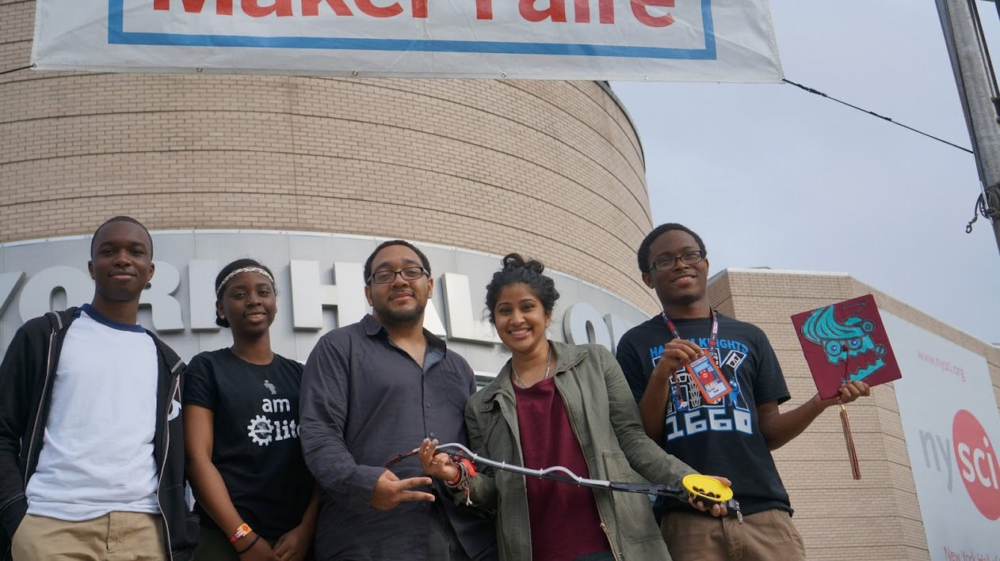

Getting To Know Charles !
Charles Marshall is an aspiring network engineer with deep interests in technology and economics. He is currently a rising junior @ SUNY Fredonia. At school, he maintains academics and leadership positions. Outside of the classroom, Charles Marshall constantly works on his coding projects and helps the Harlem community. Aside from technology and programming, he studies different aspects of business and programming from a variety of books and online resources.He hopes one day to give back to his community in the Bronx and start a program to help kids learn how to code. He looks forward to similar experiences and opportunities, throughout his years in college at the State University of Fredonia he always will be willing to work with this team improve. He feels we should make kids open to joining as well as maintaining your grades which aren't implemented as it should be. Being on the Robotics Team it gave me experiences like dealing with kids who people would think are weird and opportunities that he couldn't even imagine join programs that inspired him to do better in life.
Article 2 - Coding is an honorable trade, but we’ve accidentally adopted the fantasy that learning to code is a surefire path to becoming an innovative, independent thinker.
CEO - Charles Marshall
